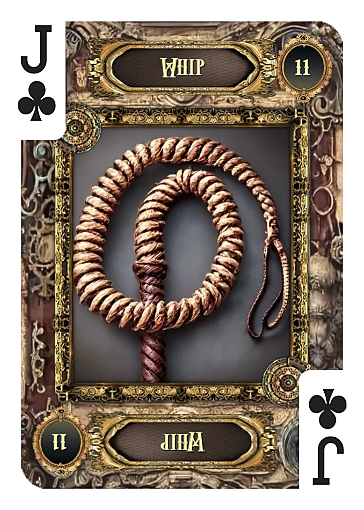
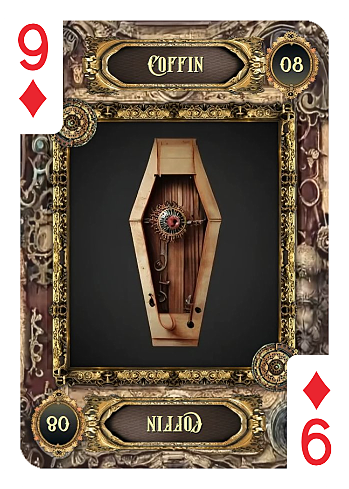
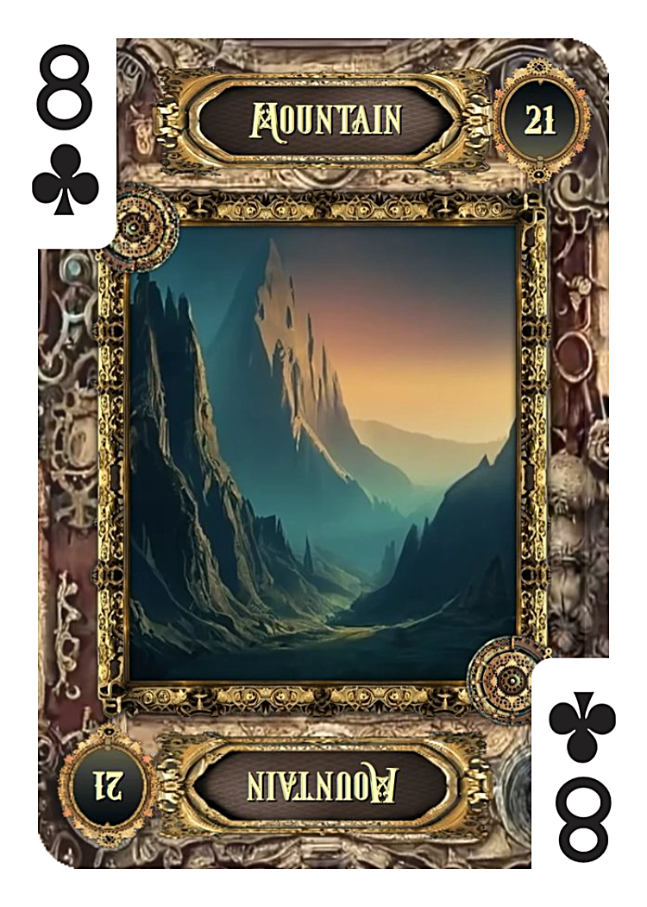
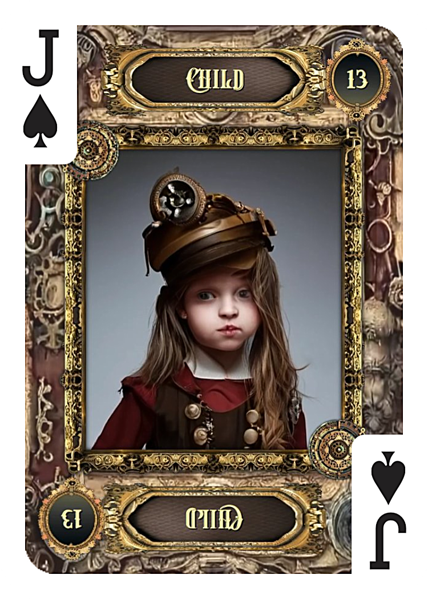
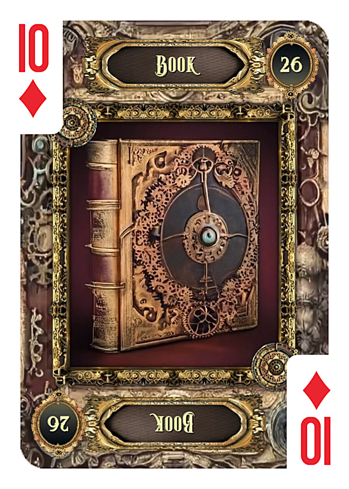

① 今回出たカード
- カード① カップの8（逆位置）
- カード② カップの2（逆位置）
- カード③ ワンドのペイジ（正位置）
- バックカード ソードの9（逆位置）
- カード① 鞭（11）
- カード② 家（4）
- カード③ 棺（8）
- カード④ 山（21）
- カード⑤ 子供（13）
- バックカード 本（26）
② 全体の印象
タロットで最初に目を引いたのは、カップが2枚続けて逆位置で出たことです。
カップは感情や関係性を表すスートなので、逆位置が重なるのは「感情のつながりが途切れかけている」「関係が停滞している」サインとして読めます。
ただ、ここで気になるのはカップの8逆位置の意味です。
正位置の「去っていく」が逆になることで、「去ろうとしたのに戻ってきた」「立ち去れなかった」という動きを示します。
完全に離れたわけではなく、どこかで引き留められている状態です。
そしてワンドのペイジ正位置が3枚目に入ってきました。
ペイジは"メッセンジャー"の意味を持ち、ワンドのペイジは特に「連絡が来る予兆」として読まれることの多いカードです。
この流れから見ると、停滞はしているが連絡が来る可能性はゼロではない、という読みになります。
バックカードのソードの9逆位置は、不安や思い悩む状態が和らいでいくサインです。
最悪の局面を少しずつ抜け出しつつある、という印象があります。
ルノルマンを見ると、こちらはより重いメッセージが並んでいます。
「鞭・棺・山」という組み合わせは、繰り返すパターン・封印・障害を示しており、正直なところ簡単な流れではありません。
ただ、最後に「子供」が出たこと、バックカードが「本（秘密）」だったことが気になります。
まだ表に出ていない何かが残っていて、新しい芽が出る余地はある——そう読んでいます。
③ タロット｜それぞれのカードの意味


④ ルノルマン｜5枚の読み解き
5枚を並べて最初に目が行くのは、「鞭・棺・山」という流れです。
これは「繰り返してきた葛藤が封じられ、今は大きな壁の前にいる」状態を示しています。
音信不通という状況そのものが、まさにこの停滞を表しているように見えます。
「家」が間に入っているのは、彼のプライベートな空間や内向きの状態を表す可能性があります。
外に向けて動くよりも、自分の内側に引きこもっている、あるいは身の回りのことで手いっぱいになっているサインかもしれません。
最後の「子供」は新しいはじまりや、まだ小さな芽のような可能性を示します。
「山（障害）」の後に「子供（はじまり）」が来る流れは、壁を越えた先に新しい動きが出てくることを暗示していると読めます。
バックカードの「本」は「秘密」を表すカードです。
まだ表に出ていないこと、彼の中に隠れている気持ちや意図があることを示しています。
現時点では見えていないだけで、何かが水面下にある——そういうサインです。

鞭（11）｜カード①
- 繰り返すパターン・葛藤
- 内側にある緊張や摩擦
- 同じところをぐるぐるしている状態

家（4）｜カード②
- プライベートな空間・内向きの状態
- 自分の身の回りに集中している
- 安心できる場所への引きこもり

棺（8）｜カード③
- 封印・終わり・閉じた状態
- 感情や言葉が外に出ない
- 一時的な停止・沈黙

山（21）｜カード④
- 大きな障害・乗り越えるべき壁
- 時間がかかる停滞
- 動きにくい状況

子供（13）｜カード⑤
- 新しいはじまりの芽
- まだ小さいが可能性がある
- 無垢な気持ち・純粋な動き

本（26）BACK
- 秘密・まだ明かされていないこと
- 水面下にある気持ちや情報
- 表には出ていないが何かが動いている
まとめ
タロットの結果を見ると、「連絡が来る可能性はゼロではない」という読みになります。
カップの8逆位置は"立ち去れなかった"動きを示し、ワンドのペイジ正位置は連絡の予兆として現れました。
バックのソードの9逆位置が「不安が和らいでいく」サインであることも、少し前向きな要素です。
ただしルノルマンは、鞭・棺・山という重い流れを示しており、今はまだ停滞の中にいることを表しています。
彼の内側に何かが封じられ（棺）、大きな壁がある（山）状態です。
それでも最後に子供が出て、バックカードが本（秘密）だったことは気になります。
表には出ていないが、水面下に何かが残っている。壁を越えた先に、小さな動きが出てくる可能性がある。
→ 今すぐではない。でも完全に終わったとも言い切れない、そういう状態です。